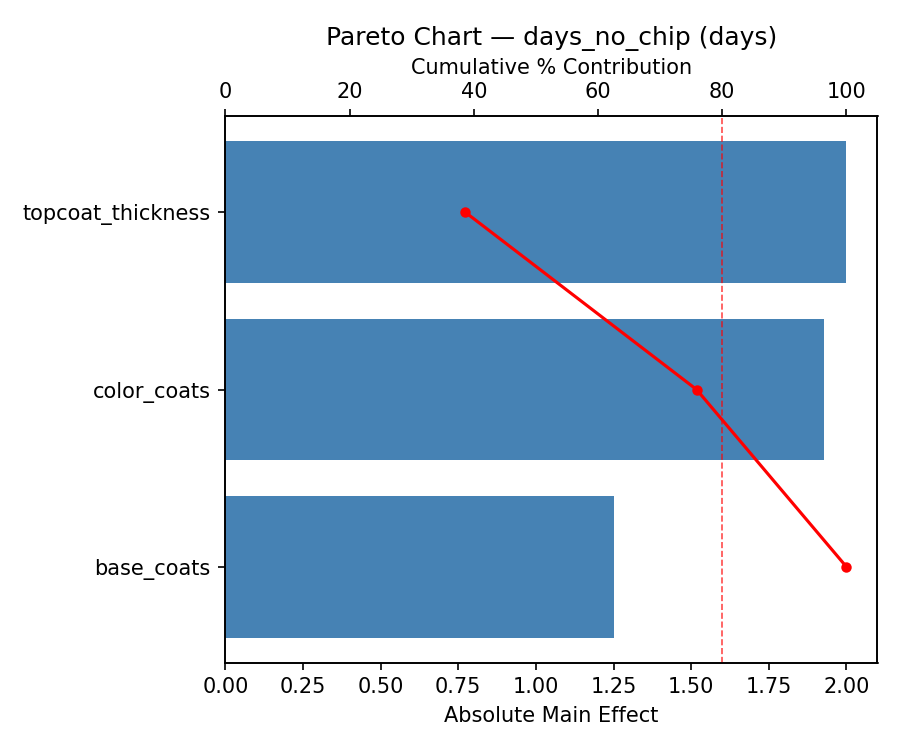
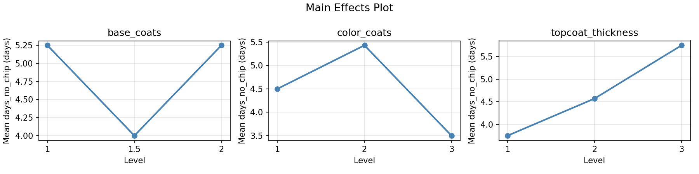
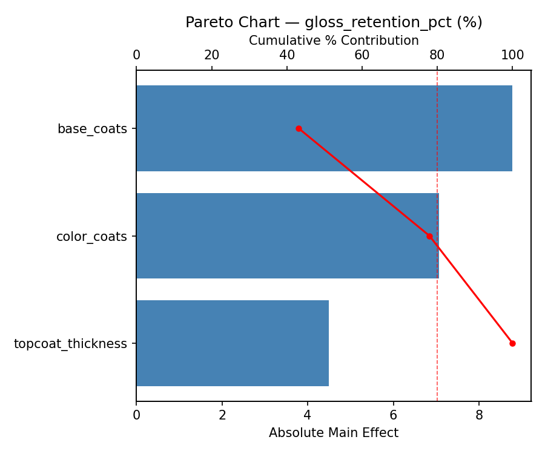
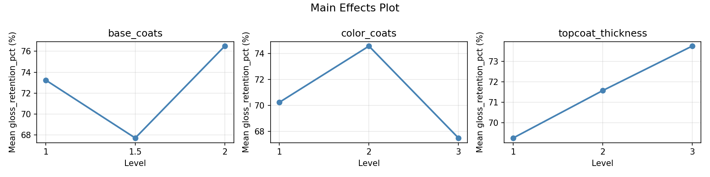
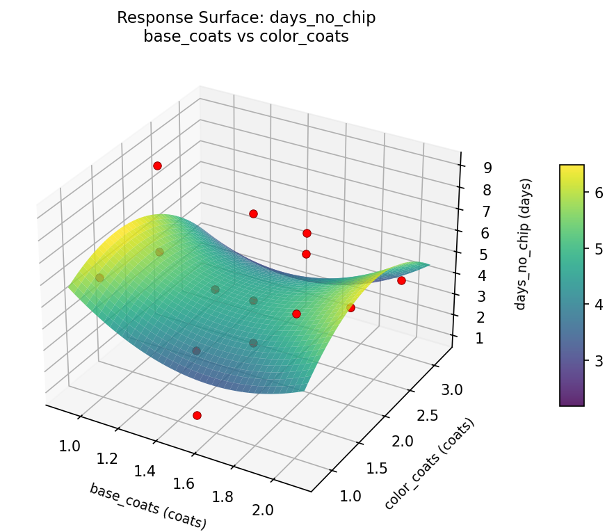
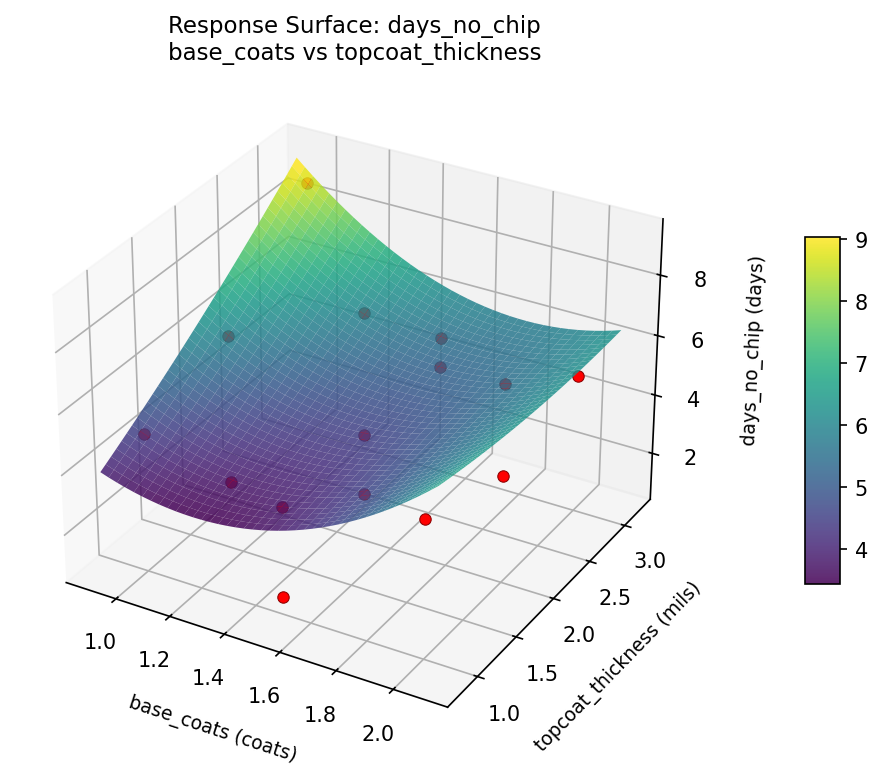
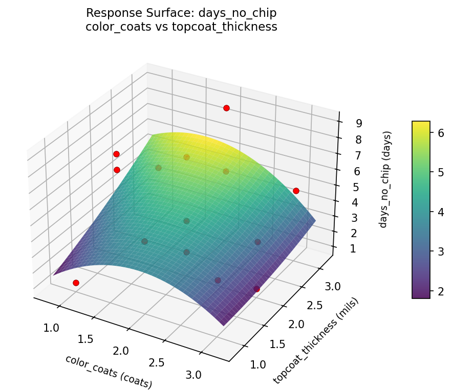
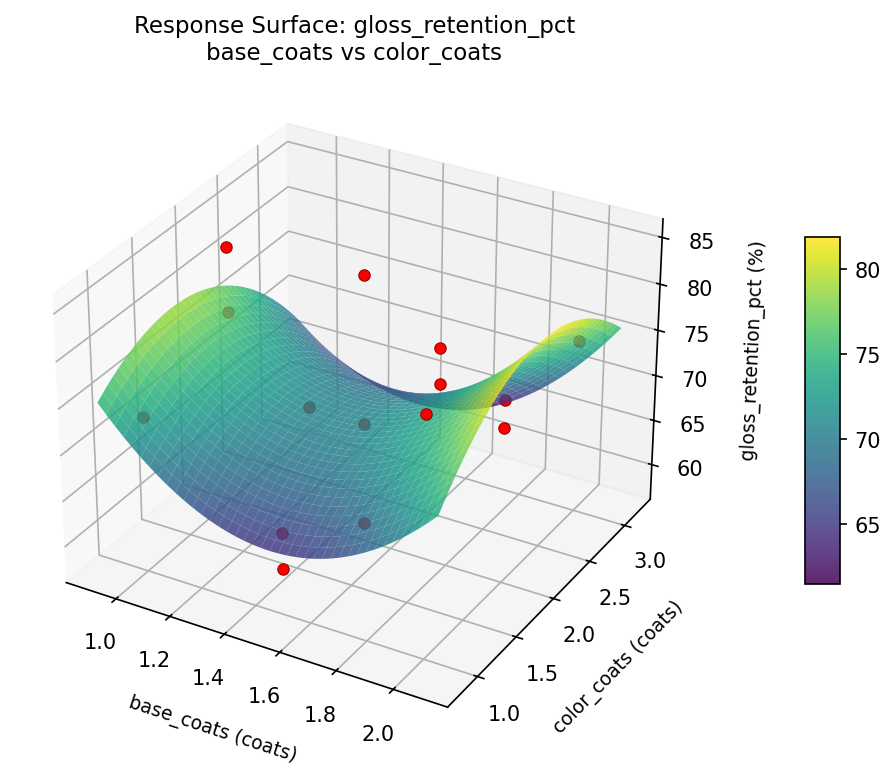
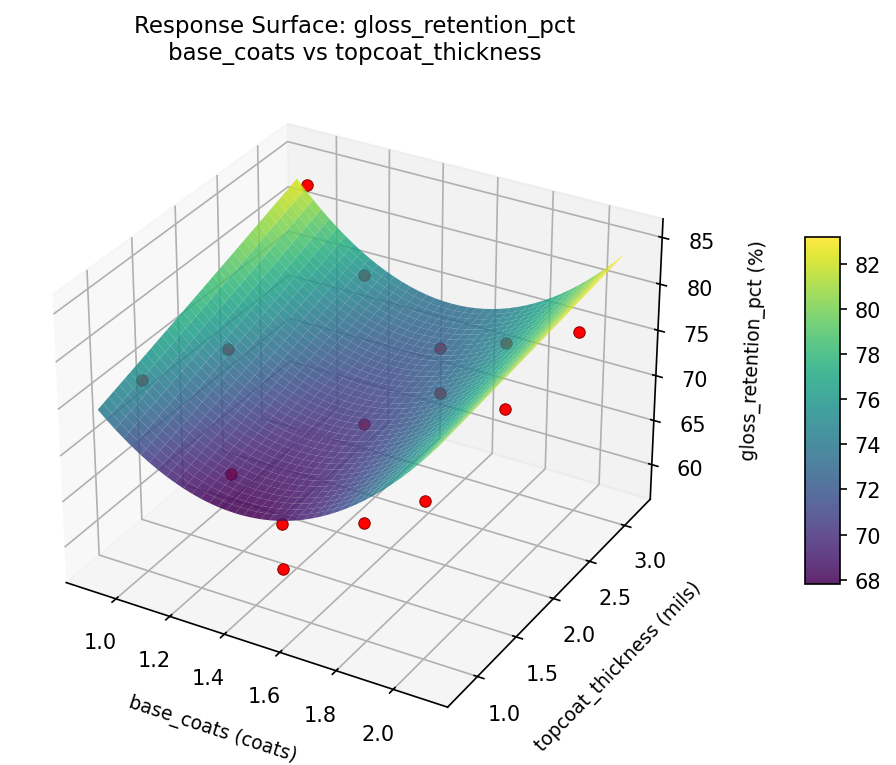
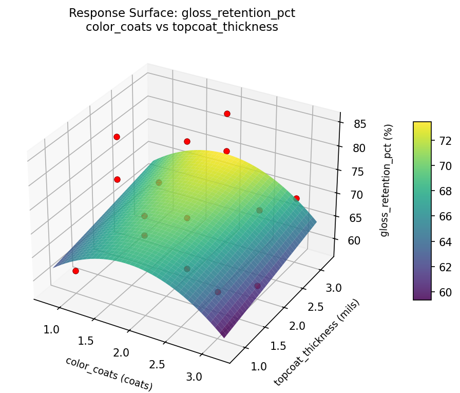

Summary
This experiment investigates nail polish durability. Box-Behnken design to maximize chip resistance and gloss retention by tuning base coat thickness, color coat layers, and top coat formula.
The design varies 3 factors: base coats (coats), ranging from 1 to 2, color coats (coats), ranging from 1 to 3, and topcoat thickness (mils), ranging from 1 to 3. The goal is to optimize 2 responses: days no chip (days) (maximize) and gloss retention pct (%) (maximize). Fixed conditions held constant across all runs include prep = dehydrator, cure = air_dry.
A Box-Behnken design was chosen because it efficiently fits quadratic models with 3 continuous factors while avoiding extreme corner combinations — requiring only 15 runs instead of the 8 needed for a full factorial at two levels.
Quadratic response surface models were fitted to capture potential curvature and factor interactions. The RSM contour plots below visualize how pairs of factors jointly affect each response.
Key Findings
For days no chip, the most influential factors were topcoat thickness (38.6%), color coats (37.2%), base coats (24.1%). The best observed value was 9.0 (at base coats = 1.5, color coats = 2, topcoat thickness = 2).
For gloss retention pct, the most influential factors were base coats (43.2%), color coats (34.7%), topcoat thickness (22.1%). The best observed value was 85.0 (at base coats = 1.5, color coats = 1, topcoat thickness = 1).
Recommended Next Steps
- Run confirmation experiments at the predicted optimal settings to validate the model.
- Consider whether any fixed factors should be varied in a future study.
Experimental Setup
Factors
| Factor | Low | High | Unit |
|---|
base_coats | 1 | 2 | coats |
color_coats | 1 | 3 | coats |
topcoat_thickness | 1 | 3 | mils |
Fixed: prep = dehydrator, cure = air_dry
Responses
| Response | Direction | Unit |
|---|
days_no_chip | ↑ maximize | days |
gloss_retention_pct | ↑ maximize | % |
Configuration
{
"metadata": {
"name": "Nail Polish Durability",
"description": "Box-Behnken design to maximize chip resistance and gloss retention by tuning base coat thickness, color coat layers, and top coat formula"
},
"factors": [
{
"name": "base_coats",
"levels": [
"1",
"2"
],
"type": "continuous",
"unit": "coats"
},
{
"name": "color_coats",
"levels": [
"1",
"3"
],
"type": "continuous",
"unit": "coats"
},
{
"name": "topcoat_thickness",
"levels": [
"1",
"3"
],
"type": "continuous",
"unit": "mils"
}
],
"fixed_factors": {
"prep": "dehydrator",
"cure": "air_dry"
},
"responses": [
{
"name": "days_no_chip",
"optimize": "maximize",
"unit": "days"
},
{
"name": "gloss_retention_pct",
"optimize": "maximize",
"unit": "%"
}
],
"settings": {
"operation": "box_behnken",
"test_script": "use_cases/221_nail_polish_durability/sim.sh"
}
}
Experimental Matrix
The Box-Behnken Design produces 15 runs. Each row is one experiment with specific factor settings.
| Run | base_coats | color_coats | topcoat_thickness |
|---|
| 1 | 1.5 | 1 | 1 |
| 2 | 1.5 | 2 | 2 |
| 3 | 2 | 2 | 3 |
| 4 | 2 | 2 | 1 |
| 5 | 1.5 | 2 | 2 |
| 6 | 1.5 | 2 | 2 |
| 7 | 1 | 2 | 3 |
| 8 | 2 | 1 | 2 |
| 9 | 1.5 | 1 | 3 |
| 10 | 2 | 3 | 2 |
| 11 | 1 | 2 | 1 |
| 12 | 1.5 | 3 | 3 |
| 13 | 1 | 1 | 2 |
| 14 | 1 | 3 | 2 |
| 15 | 1.5 | 3 | 1 |
Step-by-Step Workflow
1
Preview the design
$ python doe.py info --config use_cases/221_nail_polish_durability/config.json
2
Generate the runner script
$ python doe.py generate --config use_cases/221_nail_polish_durability/config.json \
--output use_cases/221_nail_polish_durability/results/run.sh --seed 42
3
Execute the experiments
$ bash use_cases/221_nail_polish_durability/results/run.sh
4
Analyze results
$ python doe.py analyze --config use_cases/221_nail_polish_durability/config.json
5
Get optimization recommendations
$ python doe.py optimize --config use_cases/221_nail_polish_durability/config.json
6
Generate the HTML report
$ python doe.py report --config use_cases/221_nail_polish_durability/config.json \
--output use_cases/221_nail_polish_durability/results/report.html
Real-World Experiment Workflow
ℹ
Physical Cosmetics Formulation? Use the Manual Workflow
Cosmetics experiments involve real chemical formulations, skin application, and sensory evaluation that must be tested on actual products. The simulation script above is for demonstration. For your real experiments, use record, status, and export-worksheet.
$ python doe.py export-worksheet --config use_cases/221_nail_polish_durability/config.json \
--format csv --output worksheet.csv
$ python doe.py status --config use_cases/221_nail_polish_durability/config.json
$ python doe.py record --config use_cases/221_nail_polish_durability/config.json --run 1
$ python doe.py analyze --config use_cases/221_nail_polish_durability/config.json --partial
$ python doe.py analyze --config use_cases/221_nail_polish_durability/config.json
$ python doe.py optimize --config use_cases/221_nail_polish_durability/config.json
$ python doe.py report --config use_cases/221_nail_polish_durability/config.json \
--output report.html
✔
Works Without a Test Script
The analysis pipeline doesn't care how results were produced. Record your measurements with record, and the full analysis, optimization, and reporting pipeline works identically. Use --partial to get early insights before all runs are complete.
Features Exercised
| Feature | Value |
|---|
| Design type | box_behnken |
| Factor types | continuous (all 3) |
| Arg style | double-dash |
| Responses | 2 (days_no_chip ↑, gloss_retention_pct ↑) |
| Total runs | 15 |
Analysis Results
Generated from actual experiment runs using the DOE Helper Tool.
Response: days_no_chip
Top factors: topcoat_thickness (38.6%), color_coats (37.2%), base_coats (24.1%).
Pareto Chart

Main Effects Plot

Response: gloss_retention_pct
Top factors: base_coats (43.2%), color_coats (34.7%), topcoat_thickness (22.1%).
Pareto Chart

Main Effects Plot

Response Surface Plots
3D surfaces fitted with quadratic RSM. Red dots are observed data points.
days no chip base coats vs color coats

days no chip base coats vs topcoat thickness

days no chip color coats vs topcoat thickness

gloss retention pct base coats vs color coats

gloss retention pct base coats vs topcoat thickness

gloss retention pct color coats vs topcoat thickness

Full Analysis Output
RSM surface: rsm_days_no_chip_base_coats_vs_color_coats.png
RSM surface: rsm_days_no_chip_base_coats_vs_topcoat_thickness.png
RSM surface: rsm_days_no_chip_color_coats_vs_topcoat_thickness.png
RSM surface: rsm_gloss_retention_pct_base_coats_vs_color_coats.png
RSM surface: rsm_gloss_retention_pct_base_coats_vs_topcoat_thickness.png
RSM surface: rsm_gloss_retention_pct_color_coats_vs_topcoat_thickness.png
=== Main Effects: days_no_chip ===
Factor Effect Std Error % Contribution
--------------------------------------------------------------
topcoat_thickness 2.0000 0.5909 38.6%
color_coats 1.9286 0.5909 37.2%
base_coats 1.2500 0.5909 24.1%
=== Summary Statistics: days_no_chip ===
base_coats:
Level N Mean Std Min Max
------------------------------------------------------------
1 4 5.2500 3.3040 1.0000 9.0000
1.5 7 4.0000 2.2361 1.0000 8.0000
2 4 5.2500 1.2583 4.0000 7.0000
color_coats:
Level N Mean Std Min Max
------------------------------------------------------------
1 4 4.5000 2.6458 1.0000 7.0000
2 7 5.4286 2.3705 2.0000 9.0000
3 4 3.5000 1.7321 1.0000 5.0000
topcoat_thickness:
Level N Mean Std Min Max
------------------------------------------------------------
1 4 3.7500 1.8930 1.0000 5.0000
2 7 4.5714 2.5728 1.0000 8.0000
3 4 5.7500 2.2174 4.0000 9.0000
=== Main Effects: gloss_retention_pct ===
Factor Effect Std Error % Contribution
--------------------------------------------------------------
base_coats 8.7857 2.2315 43.2%
color_coats 7.0714 2.2315 34.7%
topcoat_thickness 4.5000 2.2315 22.1%
=== Summary Statistics: gloss_retention_pct ===
base_coats:
Level N Mean Std Min Max
------------------------------------------------------------
1 4 73.2500 10.5317 59.0000 84.0000
1.5 7 67.7143 8.7123 58.0000 85.0000
2 4 76.5000 3.8730 73.0000 82.0000
color_coats:
Level N Mean Std Min Max
------------------------------------------------------------
1 4 70.2500 9.2871 61.0000 82.0000
2 7 74.5714 9.2531 58.0000 85.0000
3 4 67.5000 6.7577 59.0000 75.0000
topcoat_thickness:
Level N Mean Std Min Max
------------------------------------------------------------
1 4 69.2500 7.1356 61.0000 77.0000
2 7 71.5714 10.4220 58.0000 85.0000
3 4 73.7500 8.1803 65.0000 84.0000
Pareto chart (days_no_chip): use_cases/221_nail_polish_durability/results/analysis/pareto_days_no_chip.png
Pareto chart (gloss_retention_pct): use_cases/221_nail_polish_durability/results/analysis/pareto_gloss_retention_pct.png
Main effects (days_no_chip): use_cases/221_nail_polish_durability/results/analysis/main_effects_days_no_chip.png
Main effects (gloss_retention_pct): use_cases/221_nail_polish_durability/results/analysis/main_effects_gloss_retention_pct.png
Optimization Recommendations
=== Optimization: days_no_chip ===
Direction: maximize
Best observed run: #3
base_coats = 1.5
color_coats = 2
topcoat_thickness = 2
Value: 9.0
RSM Model (linear, R² = 0.2352, Adj R² = 0.0267):
Coefficients:
intercept +4.6667
base_coats +1.0000
color_coats +0.6250
topcoat_thickness -0.8750
RSM Model (quadratic, R² = 0.4761, Adj R² = -0.4668):
Coefficients:
intercept +5.3333
base_coats +1.0000
color_coats +0.6250
topcoat_thickness -0.8750
base_coats*color_coats -0.7500
base_coats*topcoat_thickness +0.2500
color_coats*topcoat_thickness +1.5000
base_coats^2 -0.4167
color_coats^2 -1.1667
topcoat_thickness^2 +0.3333
Curvature analysis:
color_coats coef=-1.1667 concave (has a maximum)
base_coats coef=-0.4167 concave (has a maximum)
topcoat_thickness coef=+0.3333 convex (has a minimum)
Notable interactions:
color_coats*topcoat_thickness coef=+1.5000 (synergistic)
base_coats*color_coats coef=-0.7500 (antagonistic)
Predicted optimum (from linear model):
base_coats = 2
color_coats = 2
topcoat_thickness = 1
Predicted value: 6.5417
Model quality: Weak fit — consider adding center points or using a different design.
Factor importance:
1. base_coats (effect: 2.0, contribution: 36.1%)
2. color_coats (effect: 1.8, contribution: 32.3%)
3. topcoat_thickness (effect: 1.8, contribution: 31.6%)
=== Optimization: gloss_retention_pct ===
Direction: maximize
Best observed run: #12
base_coats = 1.5
color_coats = 1
topcoat_thickness = 1
Value: 85.0
RSM Model (linear, R² = 0.0753, Adj R² = -0.1769):
Coefficients:
intercept +71.5333
base_coats +1.6250
color_coats +2.3750
topcoat_thickness -1.2500
RSM Model (quadratic, R² = 0.2939, Adj R² = -0.9771):
Coefficients:
intercept +72.6667
base_coats +1.6250
color_coats +2.3750
topcoat_thickness -1.2500
base_coats*color_coats -3.2500
base_coats*topcoat_thickness -0.0000
color_coats*topcoat_thickness +5.0000
base_coats^2 -1.4583
color_coats^2 -3.4583
topcoat_thickness^2 +2.7917
Curvature analysis:
color_coats coef=-3.4583 concave (has a maximum)
topcoat_thickness coef=+2.7917 convex (has a minimum)
base_coats coef=-1.4583 concave (has a maximum)
Notable interactions:
color_coats*topcoat_thickness coef=+5.0000 (synergistic)
base_coats*color_coats coef=-3.2500 (antagonistic)
Predicted optimum (from linear model):
base_coats = 2
color_coats = 3
topcoat_thickness = 2
Predicted value: 75.5333
Model quality: Weak fit — consider adding center points or using a different design.
Factor importance:
1. color_coats (effect: 5.9, contribution: 43.7%)
2. topcoat_thickness (effect: 4.4, contribution: 32.4%)
3. base_coats (effect: 3.2, contribution: 23.9%)